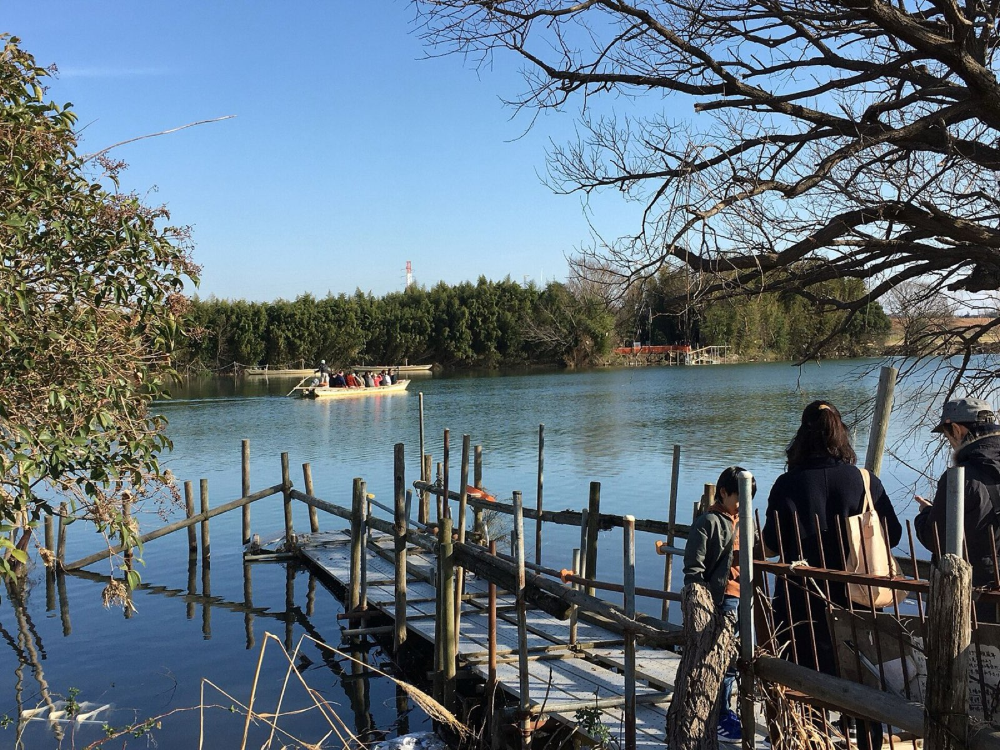

MEMBERSエリア: 松戸駅・矢切駅 周辺 / 掲載情報は現行サイトより移行(市外局番のない番号は 047)。変更がある場合は事務局(047-364-6904)までご連絡ください。
地区を選ぶ: 松戸・矢切地区 ｜ 北松戸・馬橋地区 ｜ 小金・新松戸地区 ｜ 京成松戸地区 ｜ 常盤平・五香地区
| 商号又は名称 | 代表者名 | 事務所所在地 | TEL / FAX | 営業時間・定休日 | 業種 |
|---|---|---|---|---|---|
| アールフィールズ(株)松戸店 | 野田 亮 | 271-0091 本町14-12 | 0120-210-327 FAX 700-5802 | ||
| (株)アイビーコーポレーション | 松村隆司 | 272-0836 市川市北国分2-31-19 | 373-8801 FAX 373-8701 | 定休: 日曜 | |
| (株)アイビーホーム 松戸支店 | 増子 進 | 271-0085 松戸市二十世紀が丘 中松町31-1 | 712-0231 FAX 712-0232 info@ivyhome.info | 9:30～18:30 定休: 火曜・水曜 年末年始 | 売買 / 建築 |
| (株)青木不動産管理 | 青木遥子 | 271-0087 三矢小台4-4-7 | 727-2593 FAX 723-4762 | ||
| (株)AQ Group 千葉支店 | 加藤博昭 | 271-0091 本町18-4 NBF松戸ビル5F | 308-7061 FAX 308-7065 | 定休: 水曜 | |
| (株)アスライク | 岡本愛子 | 271-0077 根本7-17 | 362-0888 FAX 362-0889 aiko@aslike.co.jp | 10:00～ 19:00 定休: 水曜 年末年始 | |
| (株)あきら不動産 | 石井 弘 | 271-0068 古ヶ崎2-3121-1 | 365-0331 FAX 368-3074 | 9:00～17:00 定休: 日曜 祭日 | 売買 / 賃貸 / 建築 リフォーム / その他 |
| (有)アドバンス | 永江俊吾 | 270-0092 松戸1228-1 松戸ステーションビル5階18号 | 367-1107 FAX 367-7177 | 定休: 水曜 | |
| Apaman Leasing(株) 松戸店 | 吉田創一郎 | 271-0091 本町2-4 ハシヤマビル2階 | 330-2071 FAX 330-2072 | ||
| 阿部不動産 | 阿部 巖 | 271-0092 松戸2-1302 | 367-6031 FAX 361-1694 | 10:00～18:00 定休: 木曜 第3水曜 | 売買 / 賃貸 / 建築 リフォーム / その他 |
| (株)有田商店 | 有田晋司 | 271-0091 本町4-11 | 366-2711 FAX 362-8106 arita.co@io.ocn.ne.jp | 9:00～18:00 9:30～18:00 (日曜・祭日のみ) 定休: 火曜 第３水曜 | |
| アルファ地所(株) | 髙宮 惇 | 271-0081 二十世紀が丘美野里町239 | 364-6039 FAX 364-6099 | 定休: 水曜 第２木曜 | |
| (有)アンシャンテ | 小野 学 | 270-2223 秋山3-2-2 | 718-8531 FAX 050-3488-4426 onomanabu@gmail.com | 9:00～20:00 定休: 不定休 | |
| (有)いすゞ不動産 | 竹内勝英 | 271-0087 三矢小台2-12-2 | 362-3748 FAX 361-6777 | 定休: 水曜 | |
| (株)飯田産業 松戸支店 | 築地重彦 | 271-0077 根本6-1 シェモア松戸1Ｆ-Ａ号 | 360-8878 FAX 360-8877 | 定休: 水曜 | |
| 盈泰ジャパン(株) | 鞠 文軍 | 271-0091 本町11-5 1F | 700-5941 | ||
| (株)nkm Living ニコニコ賃貸松戸店 | 根本美奈子 | 271-0077 根本8-24 2F | 393-8750 FAX 393-8751 | ||
| ＭＲＫ Ｎｅｘｔ(同) | 村木英彦 | 271-0091 本町3-8 | 718-7781 FAX 050-3183-6603 | ||
| (株)えんどう | 遠藤丈仁 | 271-0068 古ヶ崎4-3634 | 700-5404 FAX 710-2836 | ||
| (株)大宙 | 五十畑久雄 | 271-0093 小山816 | 701-8005 FAX 701-8004 | ||
| (株)KIARA | 竹内 章 | 271-0092 松戸1239-1-602 | 701-8013 FAX 711-9683 | ||
| (有)喜八地所 | 斉藤 栄 | 271-0086 二十世紀が丘萩町206 | 365-0505 FAX 366-9019 | 定休: 水曜 | |
| (株)くらし計画 千葉支店 | 岸本吉史 | 271-0092 松戸1292-1 シティハイツ松戸205号 | 0120‐969‐239 FAX 710‐2686 | ||
| (株)クロヤナギ不動産 | 畔栁高文 | 270-2221 紙敷1141-10 | 712-2882 FAX 413-7559 taka5821@outlook.jp | 9:00～18:00 定休: 日曜 | 売買 / 賃貸 / 建築 リフォーム |
| 京葉商事建設(株) | 岩山孝雄 | 271-0077 根本461 | 701-5438 FAX 369-2299 keiyousyouji@gmail.com | 9:00～16:30 定休: 日曜・祝祭日 年末年始 | 賃貸 |
| (有)京葉センター | 岩山浩一 | 271-0077 根本465 | 362-0431 FAX 366-2613 | 定休: 日曜 祝祭日 | |
| 弘栄開発(株) | 東 弘美 | 270-2223 秋山1-2-5 | 391-7325 FAX 392-0453 | 9:00～18:00 定休: 第2・第4 火曜日 毎週水曜日 | 売買 / 賃貸 |
| 虹久昇コレクション(有) レインボーホーム松戸店 | 三上千奈美 | 271-0092 松戸1286-5 ユーカリシティハイツ502 | 711-7015 FAX 711-7016 | ||
| 廣和建興(株) | 関川 剛 | 271-0097 栗山36-5 | 366-0151 FAX 366-0150 info@kowa-kenko.jp | 9:00～17:00 定休: 日曜・祝祭日 | 売買 / 賃貸 / 建築 リフォーム / その他 |
| コスモ建設(株) | 益田正勝 | 271-0092 松戸2061-6 | 361-0811 FAX 361-2282 | 定休: 日曜 祝祭日 | |
| (株)伍代 | 鈴木重吉 | 271-0093 小山35-2 | 367-6923 FAX 367-6923 | 9:30～17:00 定休: 水曜 | 売買 / 賃貸 |
| (株)齋藤組 | 齋藤真吾 | 271-0068 古ヶ崎2-3207-2 | 710-0718 FAX 710-0723 | ||
| サクセス・ハウジング(株) | 林 文晴 | 271-0091 本町13-11 | 308-3388 FAX 361-8001 | 定休: 水曜 | |
| (株)さくら不動産販売 松戸店 | 山崎康夫 | 271-0091 本町14-1 松戸本町センタービル 5階AB | 710-9934 FAX 710-9637 | ||
| (株)三共不動産鑑定所 | 鈴木茂生 | 271-0077 根本8-3 | 366-8731 FAX 366-8798 | ||
| (有)サンケイ宅建 | 亀田忠義 | 271-0091 本町11-3 岡田ビル4階 | 710-0836 FAX 710-0837 | ||
| (株)ｇ・ｏ・ｍ | 加藤嘉子 | 271-0077 根本268 浮ケ谷マンション | 701-7992 FAX 701-7993 | ||
| (株)塩味 | 塩井祥敬 | 271-0077 根本452 篠崎建物501 | 703-8126 FAX 703-8136 | ||
| しかや不動産(株) | 板谷隆史 | 271-0067 樋野口591-2 | 710-6712 FAX 710-6716 info@shikayafudousan.com | 11:00～23:00 定休: 火曜 | 売買 / 売買 / その他 |
| (株)シティハウス 千葉支店 | 森井雅彦 | 270-2261 常盤平1-10-1 | 311-5711 FAX 311-5710 | 定休: 水曜 | |
| 篠崎建物(株) | 篠崎皓英 | 271-0092 松戸2063 | 365-4321 FAX 365-4357 | 定休: 水曜 | |
| (有)住建ハウジング | 加藤裕美 | 271-0096 下矢切124-1 | 361-8377 FAX 368-8151 | 定休: 水曜 | |
| (株)住宅リサーチサービス | 橋本竜馬 | 271-0093 小山35-2 松戸パレス105 | 308-8585 FAX 413-0660 info@jrs-on.com | 9:30～18:00 定休: 日祝祭日 （予約可） | 売買 / 賃貸 / リフォーム / その他 |
| 秀和賃貸センター(株) | 齋藤公一朗 | 271-0092 松戸市松戸1291-4 | 362-7171 FAX 362-7178 | 定休: 水曜 | |
| 秀和ハウス(株) 松戸店 | 齋藤征文 | 271-0091 本町18-4 | 365-3111 FAX 364-5309 | 定休: 土曜 日祝祭日 | |
| (株) 上 | 下条 雄 | 271-0092 松戸市松戸1150番地 松戸東信ビル2階 | 330-3330 FAX 710-2212 joe@o-joe.com | 9:00～18:00 定休: 日曜 | 売買 / 賃貸 / 建築 / その他 |
| (有)常総ハウジング | 湯浅 隆 | 271-0097 栗山12 | 365-8277 FAX 367-8858 | 定休: 水曜 | |
| (株)STOB | 森 公佑 | 271-0067 樋野口490-1 | 050-7116-2778 FAX 710-6585 | ||
| (有)正和土地建物 | 橋本孝司 | 271-0092 松戸1225 | 362-5588 FAX 364-8815 | 定休: 水曜 | |
| (有)松和不動産 | 鈴木豊子 | 271-0091 本町17-15 小林ビル2Ｆ | 367-1505 FAX 367-1356 | 定休: 土曜 日祝祭日 | |
| (株)新星住宅販売 | 星 雅己 | 271-0084 二十世紀が丘丸山町47-2 | 392-7170 FAX 392-6604 sinsei@ballade.plala.or.jp | 9:00～19:00 定休: 日曜 第３土曜 | 売買 / 賃貸 / 建築 リフォーム |
| (株)sincerity | 新村初江 | 271-0077 根本122-2 朝日松戸プラザ2階206号 | 369-7740 FAX 369-7741 | ||
| (株)住まいと生活相談 | 傘木則夫 | 271-0087 三矢小台3-9-15 | 050-3575-5543 FAX 050-3183-9117 | 14:00～18:00 定休: 火曜・水曜 祝日 年末年始 | 売買 / 賃貸 |
| セキハウス(株) | 関 義幸 | 271-0092 松戸1756-11 | 331-8000 FAX 331-8889 | 定休: 水曜 | |
| セキハウス(株) 営業本部 | 関 義幸 | 271-0092 松戸1756-11 | 331-8000 FAX 331-8889 | 定休: 水曜 | |
| 相互不動産(株) | 古井丈久 | 271-0091 本町25-4 第2石井ビル201 | 368-1234 FAX 368-1291 | 定休: 水曜 第３木曜 | |
| (株)総武 | 川村勝志 | 270-2222 高塚新田593-158 | 710-0411 FAX 710-0410 | ||
| 曽谷商事(株) | 土屋時彦 | 271-0077 根本3-12-101 | 360-0551 FAX 360-0577 | 定休: 土曜 日曜 | |
| 高塚不動産(株) | 落合浩秋 | 270-2222 高塚新田234 | 392-1027 FAX 392-4630 | 10:30～18:0 定休: 水曜 | 売買 / 賃貸 / その他 |
| 髙松エステート(株)松戸営業所 | 小松晋治 | 271-0092 松戸1834-12 クロスコード1階 | 710-7100 FAX 710-7401 | ||
| 髙松工業(有) | 髙松洋平 | 271-0076 岩瀬609-5 | 703-3272 FAX 703‐3273 | ||
| タクトホーム(株) 松戸店 | 小寺一裕 | 271-0092 松戸1874 グランハーベスト1階 | 312-3888 FAX 312-3838 | 定休: 水曜 | |
| (株)中央住宅 ポラス住まいの情報館 松戸営業所 | 品川典久 | 271-0091 本町12-11 秋本ビル1・2Ｆ | 363-8811 FAX 363-8861 | 定休: 水曜 | |
| (株)中央ビル管理 松戸営業所 | 中内晃次郎 | 271-0091 本町4-5 MH45 | 703-5300 FAX 703-5302 biru.matsudo-fg@polus.co.jp | 9:00～18:00 定休: 火曜 水曜 | 売買 / 賃貸 |
| (株)忠和商事 | 宮島せつ子 | 271-0077 根本149 | 364-1280 FAX 366-1451 | 定休: 水曜 | |
| (株)塚田工務店 | 塚田京子 | 271-0094 上矢切1100 | 363-0544 FAX 363-0878 akyoran@mve.biglobe.ne.jp | 8:00～18:00 | 売買 / 建築 リフォーム |
| 天道不動産商事(株) | 山本広道 | 271-0096 下矢切89-1 | 362-7707 FAX 364-2974 | 定休: 日曜 祝祭日 | |
| 東新(株) | 星崎政龍 | 271-0096 下矢切22‐10 矢切ビル | 711-9234 FAX 711-9235 | ||
| (株)東宝ハウス松戸 | 塩濱豪士 | 271-0091 本町7-10 7階 | 701-8664 FAX 701-8665 | ||
| トライホーム(株) | 髙橋朋広 | 271-0087 三矢小台5-3-27 | 710-7734 FAX 710-7743 | ||
| (有)中建 | 中嶋勝則 | 270-2222 高塚新田498-19 | 392-1764 FAX 392-1765 | ||
| (株)NEW FIRST | 齋藤真吾 | 271-0068 古ヶ崎2-3207-2 | 375-8102 FAX 375-8103 | ||
| 日本開発(株) | 内田雅士 | 271-0091 本町20-1 | 363-5201 FAX 363-5204 nihon-k@akinai.ne.jp | 10:00～17:00 定休: 水曜 | 売買 / 賃貸 / その他 |
| (株)ハウスなび 松戸店 | 伊藤公士 | 271-0091 本町19-5 | 364-7600 FAX 364-7601 | 定休: 火曜 水曜 | |
| (有)ビーエス商事 | 染谷久夫 | 270-2223 秋山1-10-5 | 392-2307 FAX 392-2304 | 定休: 日曜 祝祭日 | |
| (株)ピノ | 堀越英一 | 271-0092 松戸1791-1 | 369-2009 FAX 369-2008 | 定休: 水曜 隔週火曜 | |
| ひやまトータルプラン(株) | 檜山正則 | 271-0092 松戸市松戸1228-1 松戸ステーションビル5階 | 703-1180 FAX 703-1181 | ||
| (株)フォーシーズン | 深山武晴 | 271-0097 栗山312 | 367-8879 FAX 361-5700 | 定休: 土曜 日曜 | |
| (有)フジカ | 加藤健志 | 271-0092 松戸1901 | 362-2936 FAX 368-3374 | 定休: 第２水曜 第３水曜 | |
| (株)不動産SHOPナカジツ 松戸水戸街道店 | 鳥居 守 | 271-0076 岩瀬164-1 | 393-8777 FAX 394-4555 | ||
| ホームトレードセンター(株) 松戸営業所 | 関田信平 | 271-0091 本町25‐4 第2石井ビル1階 | 393‐8384 FAX 393‐8338 | ||
| 北総住販(株) | 藤井則明 | 271-0067 樋野口789 | 368-6151 FAX 368-6152 | 定休: 水曜 日曜 祝祭日 | |
| ポラーノのお家(株) | 槻木修行 | 271-0076 岩瀬114-19 ヒルズ岩瀬102 | 360-7255 FAX 360-7256 | ||
| (株)Ｍyアセット | 中野貴行 | 271-0073 小根本37-3 | 366-8888 FAX 363-3980 info@e-sumai.co.jp | 9:30～18:00 定休: 水曜 | 売買 / 賃貸 / 建築 リフォーム / その他 |
| (株)松浦住宅 | 松浦憲正 | 271-0077 根本8-12 | 361-7788 FAX 368-7070 | 定休: 第１日曜 第３日曜 | |
| (株)丸井住宅 | 石井一範 | 271-0085 二十世紀が丘中松町3-1 | 392-5576 FAX 392-0345 marui@oregano.ocn.ne.jp | 9:00～18:00 定休: 水曜 | 売買 / 賃貸 |
| 丸新松戸(株) | 松永洋平 | 271-0091 本町19-20 MⅢBLDG 2F | 362-2505 FAX 361-4656 | 定休: 水曜 | |
| 三矢小台住宅(株) | 清水正巳 | 271-0087 三矢小台5-9-12 | 363-7800 FAX 363-7801 miyakodai-7800@wg8.so-net.ne.jp | 9:00～17:00 定休: 土曜 日曜 祝祭日 | 売買 / 賃貸 |
| (株)ミヤザワホームズ | 宮澤健治 | 271-0077 根本2-12 | 368-1515 FAX 368-1616 | 定休: 水曜 第１火曜 第３火曜 | |
| 明善建設(株) | 清水久勝 | 270-2261 常盤平1-10-1 | 311-5531 FAX 311-5530 | 定休: 年中無休 | |
| (株)森谷エステート | 森谷秀樹 | 271-0077 根本2-16 アムス松戸ブランティーク1F | 362-6700 FAX 362-4451 | 定休: 日曜 祝祭日 | |
| (株)ヤギノ不動産 | 八木野玄揮 | 271-0096 下矢切72 | 362-5616 FAX 363-6559 | 定休: 水曜 第３日曜 | |
| (株)山一ハウス | 山下 敦 | 271-0092 松戸1276-1 ファミールスクエア松戸101 | 362-0021 FAX 362-0063 office@c21.co.jp | 9:00～20:00 定休: 水曜 | 売買 / 賃貸 / 建築 リフォーム |
| (有)ヤマサン恒業 | 中山政明 | 271-0091 本町8-4 | 367-2026 FAX 367-0110 | 定休: 火曜 | |
| (株)山本住宅 | 山本浩太朗 | 271-0092 松戸876-3 | 367-2706 FAX 363-3337 office@yama-ju.co.jp | 9:00～18:00 | 売買 / 賃貸 / 建築 リフォーム / その他 |
| (株)URリンケージ UR松戸営業センター | 村上卓也 | 271-0091 松戸市本町7-10 ちばぎん松戸ビル8階 | 367-5221 FAX 366-8273 | 9:30～18:00 定休: 水曜 年末年始 | |
| (有)弓家木材 | 弓家圭子 | 270-2232 和名ヶ谷1000 | 363-5936 FAX 368-7799 | ||
| ヨシナガ住宅(株) | 吉田 明 | 271-0086 二十世紀が丘萩町215-5 | 308-7020 FAX 308-7021 | 定休: 水曜 | |
| ライジング(株) | 源平拓也 | 271-0094 上矢切1536-4 アシェイドライン103 | 770-1017 FAX 413-7702 | ||
| (有)リアルプラスワン | 黒﨑 勇 | 271-0084 二十世紀が丘丸山町125 | 360-0224 FAX 710-5510 | 定休: 水曜 日曜 | |
| (有)リードソリューション | ペレーラ園子 | 270-2223 秋山474-5 | 312-8887 FAX 709-4726 | ||
| (株)ルネッサンス・テレーン | 渋谷義行 | 271-0077 根本7-17 | 363-9100 FAX 363-9101 | 定休: 日曜 祝祭日 | |
| (株)ルームプラス | 押尾知明 | 271-0091 本町1-11 KYSⅡビル5階 | 702-7655 FAX 702-7656 | ||
| (株)ワイアンドジェイ | 高橋順子 | 270-2224 大橋393-1 | 392-3388 FAX 392-8833 | ||
| (有)和田酒店 | 和田正行 | 271-0093 小山26 | 312-3555 FAX 710-5353 |